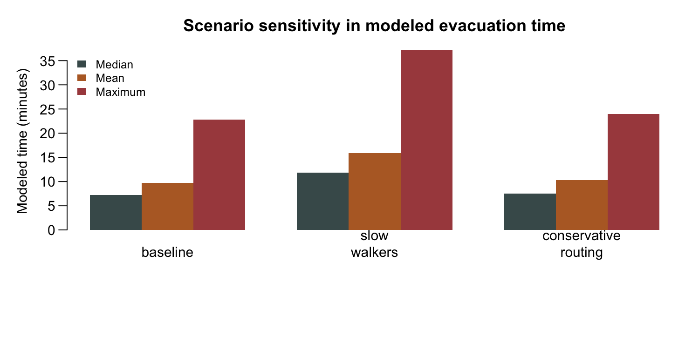

compare_evac_scenarios() runs the same study inputs
under named parameter overrides. It returns each raw result, a scenario
summary, and combined spatial layers when available.
comparison <- compare_evac_scenarios(
hazard_zone = hazard_zone,
roads = roads,
dem = dem,
target_crs = "EPSG:32748",
max_origins = 100,
max_destinations = 25,
scenarios = list(
baseline = list(walking_speed_mps = 1.22),
slow_walkers = list(walking_speed_mps = 0.75),
conservative_lcp = list(
lcp_neighbours = 8,
lcp_max_slope = 30
)
)
)
comparison$summary
Scenario sensitivity in modeled evacuation
time.
The compact packaged example below retains the scenario-level time metrics and the assumptions used to generate them.
| Scenario | Origins | Exits | Walking speed | Median min. | Mean min. | Maximum min. | Assumption |
|---|---|---|---|---|---|---|---|
| baseline | 25 | 8 | 1.22 | 7.27 | 9.75 | 22.84 | Baseline walking-speed and routing assumptions. |
| slow_walkers | 25 | 8 | 0.75 | 11.83 | 15.86 | 37.15 | Changes time conversion; route distance is held by the same routing setup. |
| conservative_routing | 25 | 8 | 1.22 | 7.48 | 10.26 | 23.96 | Uses 8 neighbours and a 30 percent maximum slope. |
Treat scenario outputs as sensitivity analysis. A slower walking speed changes time conversion; conductance and neighbourhood settings can change modeled route geometry as well as distance. A scenario with incomplete outputs is retained with missing summary values rather than discarding the whole comparison.